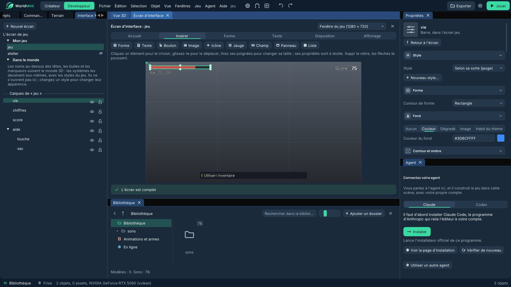
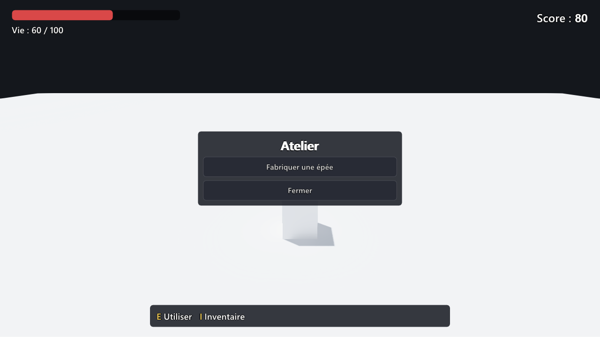

L'interface du jeu : écrans, menus, listes, champs de saisie¶
Tout ce que votre jeu affiche par-dessus la scène (un écran titre, une pause, une boutique, une boîte de dialogue, un inventaire, une barre de vie, une fenêtre de discussion) est l'interface du jeu. Elle est faite d'écrans. Chaque écran se met en forme à la souris dans l'éditeur d'écrans, comme une diapositive de PowerPoint : des formes, avec un fond, un contour, une ombre, une icône et un texte.
Il y a deux sortes d'écrans :
- les écrans livrés par les systèmes : le Menu apporte son écran titre et sa pause, l'Inventaire sa fenêtre et sa barre rapide, la Barre de vie sa barre… Vous changez leur allure, vous y ajoutez des boutons, vous retirez ce dont vous ne voulez pas : le système continue de les remplir et de réagir aux clics ;
- vos propres écrans : un score, un chronomètre, un panneau d'aide, un menu d'atelier. Vous les dessinez vous-même, ou l'agent les dessine pour vous.
L'allure commune à tout le jeu (couleurs, taille du texte, coins, images d'un pack d'interface) se règle en un seul endroit, avec le système Interface.
Ce que l'interface sait afficher¶
Un écran est fait de formes. Chaque forme a une sorte :
| Sorte | Ce que c'est |
|---|---|
| Forme | Un rectangle, un rectangle arrondi, un cercle, une pilule, un losange, un triangle ou une étoile, qui peut porter une icône et un texte, et contenir d'autres formes. |
| Texte | Un texte, qui revient à la ligne de lui-même dans la largeur donnée. Il peut avoir des mots en gras et des mots en couleur. |
| Bouton | Une forme qu'on clique : elle ouvre ou ferme un écran, envoie un événement, ou lance une action du système. |
| Image et Icône | Une image du projet (un logo, un portrait), ou une icône dessinée par WorldMint (un cœur, une goutte, une étoile, une épée…). |
| Jauge | Une barre qui se remplit : la vie, l'endurance, une progression. |
| Champ | Une case où le joueur tape du texte : son nom, un message, un code. |
| Panneau | Un fond qui range ce qu'il contient : en colonne, en ligne ou en grille. Les panneaux s'emboîtent : un menu dans un panneau, des cases d'inventaire dans une grille. |
| Liste | Un panneau dont la première forme sert de modèle de ligne : le jeu la répète pour chaque élément (les objets d'un inventaire, les scores). Avec une hauteur donnée, elle défile à la molette, avec une fine barre de défilement. |
Le jeu place lui-même les formes d'un panneau, les unes après les autres : il n'y a pas de positions à calculer.
La souris¶
En jeu, le curseur est caché et la souris tourne la caméra. Quand le jeu ouvre une interface où l'on clique (un inventaire, un menu), il montre le curseur : la caméra ne tourne plus avec la souris, et le système Combat simple ne frappe plus. L'agent s'en occupe quand il écrit le menu.
Les champs de saisie¶
Le comportement d'un champ de saisie est le même dans tous les jeux faits avec WorldMint :
- Un clic sur le champ le sélectionne et y pose le curseur : ce que le joueur tape s'écrit là où est le curseur. Retour arrière efface le caractère avant le curseur, Suppr celui d'après.
- Les flèches, Début et Fin déplacent le curseur ; avec Ctrl, les flèches sautent un mot entier (et Retour arrière l'efface).
- Maj avec les flèches, ou la souris glissée en tenant le bouton, sélectionne du texte ; Ctrl+A sélectionne tout. Une lettre tapée remplace la sélection.
- Ctrl+C, Ctrl+X et Ctrl+V copient, coupent et collent, avec le presse-papiers de Windows : on peut coller un pseudo copié ailleurs.
- À la manette, une fois le champ sélectionné : la croix déplace le curseur, A valide, B quitte le champ. Pour écrire, il faut un clavier.
- Tant qu'un champ est sélectionné, le joueur ne bouge pas et aucune commande du jeu ne se déclenche : taper « z » écrit un z, sans faire avancer le personnage.
- Entrée valide le champ et le quitte. Le jeu reçoit le texte, et le joueur peut de nouveau bouger.
- Échap, ou un clic ailleurs, quitte le champ sans le valider.
Garder le champ actif après Entrée
Pour une fenêtre de discussion, on veut souvent pouvoir envoyer plusieurs messages à la suite, sans recliquer dans le champ. Ce n'est pas le comportement standard : il faut un script qui sélectionne de nouveau le champ après chaque message. Demandez-le à l'agent, par exemple : « Dans la fenêtre de discussion, après Entrée, envoie le message, vide le champ et laisse-le actif. »
La manette et le clavier¶
Toutes les fenêtres du jeu se pilotent aussi sans souris, sans rien écrire : le jeu trouve lui-même leurs boutons.
| Manette | Clavier | Ce que ça fait |
|---|---|---|
| Croix ou stick gauche | Flèches | Passe au bouton voisin, selon sa place à l'écran. Tenu, il avance tout seul : on descend une longue liste sans appuyer à chaque ligne. |
| Tab | Passe au bouton suivant, et revient au premier après le dernier. | |
| A | Entrée | Clique le bouton choisi. |
| B | Échap | Ferme la fenêtre, ou revient en arrière (des options à la pause). |
- Le bouton choisi se voit de loin : plus clair, avec un cadre épais de la couleur d'accent du système Interface.
- À la manette, une fenêtre qui s'ouvre choisit tout de suite son premier bouton. Au clavier, la première flèche montre le bouton choisi, la suivante le déplace.
- Une liste qui défile suit le bouton choisi.
- Pendant qu'on choisit dans une fenêtre, le personnage ne bouge pas, et les boutons qui servent à la fenêtre ne déclenchent pas leur commande : A ne fait pas sauter, la croix ne boit pas de potion.
- La souris marche comme avant : dès qu'elle bouge, le cadre disparaît, et le bouton survolé devient le bouton choisi.
C'est le moteur qui s'en occupe, pour toutes les fenêtres : celles des systèmes comme celles que l'agent écrit. Le bouton que B et Échap cliquent est celui que la fenêtre désigne comme son bouton « Fermer » ou « Retour » ; une fenêtre qui n'en a pas (un dialogue en cours) laisse Échap ouvrir la pause, comme d'habitude.
L'éditeur d'écrans¶
Où le trouver¶
- En mode Développeur, le panneau Interface : le bouton Interface en haut du panneau Systèmes, ou le menu Fenêtres. Sans les panneaux libres, c'est la section Écrans d'interface de l'onglet Jeu. Le mode Créateur n'a pas l'éditeur d'écrans : demandez à l'agent, ou passez en mode Développeur.
- Un clic sur un écran de la liste l'ouvre au-dessus de la vue 3D, dans l'onglet Écran d'interface. La liste en haut à droite le montre à la taille de la fenêtre du jeu, ou en 16/9, 16/10, 4/3, 21/9 et en téléphone debout. La croix le ferme.

La liste des écrans¶
Les écrans sont rangés en groupes, qu'on replie d'un clic :
| Groupe | Ce qu'il contient |
|---|---|
| Un groupe par système (Menu, Manche, Inventaire…) | Les écrans que ce système a livrés en s'installant. Ils se mettent en forme comme les vôtres ; leurs formes obligatoires ne se suppriment pas. |
| Mon jeu | Les écrans que vous avez dessinés, ou que l'agent a dessinés. Une petite icône d'œil barré dit qu'un écran est caché au départ (une annonce, une touche ou un script le montre). |
| Dans le monde | Ce qui suit le monde 3D : les noms au-dessus des têtes, les bulles, les marqueurs. Ils ne s'ouvrent pas ici : les systèmes les dessinent avec les styles du jeu, donc changer un style change leur allure. |
En haut de la liste, Nouvel écran crée un écran vide dans Mon jeu, et L'écran de jeu montre tout ce que voit le joueur au départ, ensemble.
Un écran livré que vous avez changé porte le badge Modifié. Choisi, il propose Revenir à la version du système : vos changements sur cet écran sont perdus, et Ctrl+Z les rend.

L'écran ouvert¶
De haut en bas, au milieu :
- Le ruban, comme celui de PowerPoint (voir plus bas).
- Montré comme en jeu, pour un écran d'un système : l'aperçu prend ses textes dans un court essai du jeu, sans fenêtre, au moment où le système montre cet écran (« Les textes viennent d'un essai du jeu »). Si l'écran sert à plusieurs fenêtres, la liste choisit laquelle. Sans essai possible, l'aperçu montre les valeurs d'essai.
- L'aperçu, à la taille choisie. Un clic choisit une forme, on la glisse pour la déplacer, on tire ses poignées pour changer sa taille.
- La barre de vérification, sous l'aperçu : en vert, L'écran est complet ; sinon, en rouge, chaque problème en une phrase (« La forme obligatoire « Bouton Jouer » manque : le système en a besoin », « Ce bouton ne fait rien », « … ouvre un écran qui n'existe pas »). Un clic sur un problème choisit sa forme.
À gauche, sous la liste, Calques de « … » montre les formes de l'écran ouvert, celles qu'une forme contient rangées sous elle. Un clic choisit une forme (Ctrl+clic en ajoute une), l'œil la cache ou la remontre, le cadenas la verrouille, le clic droit propose Supprimer la forme. Chaque forme d'un écran livré porte un badge :
| Badge | Ce qu'il veut dire |
|---|---|
| Obligatoire (avec un cadenas) | Le système en a besoin. Elle se met en forme et se déplace, mais ne se supprime pas. |
| Facultatif | Livrée par le système, elle se supprime si vous n'en voulez pas. |
| À vous | Vous l'avez ajoutée à cet écran. |
Les valeurs d'essai. Dans le volet Format, Valeur d'essai donne à une forme ce que l'aperçu montre à la place du texte qu'écrira le système (« 3 », « Pomme x3 ») ; Retirer la valeur d'essai l'enlève. Le jeu ne s'en sert jamais : c'est seulement pour voir la place que prendra un texte.
Le ruban¶
| Onglet | Ce qu'il propose |
|---|---|
| Accueil | Annuler et Rétablir ; la galerie des styles, chaque case dessinée pour de vrai (un clic donne le style à la forme choisie) ; Plus, qui ouvre Gérer les styles ; Copier la mise en forme et Coller la mise en forme, comme le pinceau de Word. |
| Insérer | Forme (une galerie de 7 contours), Texte, Bouton, Image, Icône, Jauge, Champ, Panneau, Liste. La nouvelle forme se pose au centre de l'écran, ou dans la forme choisie si elle en contient d'autres. |
| Forme (quand une forme est choisie) | Contour de forme, Fond, Contour, Ombre, Icône, Place de l'icône ; Nouveau style à partir de cette forme ; Revenir au style. |
| Texte (quand la forme a un texte) | La police, la taille, le gras, l'italique, le souligné, la couleur et l'alignement du texte. |
| Disposition | Aligner sur l'écran (À gauche, Au centre, À droite, En haut, Au milieu, En bas) ; Premier plan, Avancer, Reculer, Arrière-plan ; l'ancrage ; avec plusieurs formes choisies, Répartir à l'horizontale, Répartir à la verticale, Même largeur, Même hauteur, Même taille. |
| Affichage | Zoom arrière, Zoom avant, Tout l'écran, et l'Aimant (une forme qu'on glisse s'aligne sur les bords et les centres des autres). |
Chaque outil a une infobulle. Quand la place manque, le ruban passe à la ligne au lieu de cacher des outils.
Le volet Format¶
Quand une forme est choisie, le panneau de droite devient le volet Format. Ses sections se replient :
| Section | Ce qu'elle règle |
|---|---|
| Style | Le style que suit la forme, avec « (modifié) » si vous avez changé quelque chose à la main, ou « (introuvable) » si son style n'existe plus. Revenir au style oublie les changements faits à la main ; Nouveau style… fait un style de l'apparence de cette forme. |
| Forme | Le contour de forme : rectangle, rectangle arrondi (avec le rayon des coins), cercle, pilule, losange, triangle, étoile, ou Aucune (texte seul). |
| Fond | Aucun, Couleur, Dégradé (deux couleurs et un sens), Image (avec ses images selon l'état et son cadre étirable) ou Habit du thème (les images du pack d'interface, montrées en vignettes). |
| Contour et ombre | La couleur et l'épaisseur du contour ; la couleur, le décalage et le flou de l'ombre ; l'opacité de la forme et de tout ce qu'elle contient. |
| Contenu | L'icône ou l'image (un fichier du projet, une case d'une planche d'icônes, ou une icône du moteur), sa place par rapport au texte, sa taille et sa teinte ; puis le texte et sa mise en forme. |
| Comportement | Quand on clique (voir plus bas) ; et si la forme est une jauge, un champ de saisie, une liste, si elle est désactivée ou cachée au départ. |
Plus bas restent la Disposition d'un panneau (colonne, ligne, grille), la Valeur affichée en jeu, le nom de l'élément et Place et taille (l'accroche à un coin, un bord ou le centre de l'écran, le décalage et la taille, en part de l'écran).
Quand on clique propose :
- Rien : la forme ne se clique pas ;
- les actions du système de l'écran : sur l'écran titre du Menu, « Jouer », « Options », « Quitter »… ; sur un écran de la Manche, « Lancer la partie » ;
- Ouvrir l'écran…, Fermer cet écran, Remplacer par l'écran…, Ouvrir ou fermer l'écran… ;
- Envoyer l'événement… : un nom d'événement, auquel répond une règle du Déclencheur ou un script ;
- Action du Déclencheur… : une action toute faite du Déclencheur, réutilisable.
Quand rien n'est choisi, le panneau de droite montre l'écran lui-même : son nom, Quand le montrer (au début de la partie, sur des annonces, ou avec une commande comme I pour un inventaire), s'il montre le curseur et s'il met le jeu en pause, la liste de ses éléments, et Supprimer l'écran.
Les styles¶
Un style est une apparence nommée, comme les styles de Word : « Bouton principal », « Titre de fenêtre », « Case d'inventaire ». Toutes les formes qui suivent un style changent ensemble quand on le change.
- Créer un style : choisissez une forme mise en forme comme vous l'aimez, puis Nouveau style… (volet Format, section Style) ou Nouveau style à partir de cette forme (ruban, onglet Forme). Donnez-lui un nom : la forme le suit.
- Donner un style : choisissez une autre forme, puis cliquez le style dans la galerie de l'onglet Accueil, ou choisissez-le dans la section Style.
- Gérer les styles (Accueil › Plus) : chaque style du jeu avec le nombre de formes qui le suivent, et des boutons pour le modifier (le style s'ouvre dans le volet Format, ses formes changent en direct ; Terminer le ferme), le renommer (ses formes suivent), le dupliquer et le supprimer (après confirmation).
- Les styles livrés. Un système peut livrer ses propres styles avec ses écrans ; leur infobulle le dit (« Livré par le système… »). Un style peut être basé sur un autre : il ne change que ce qu'il donne et suit le reste de celui dont il part.
- Appliquer le thème du jeu (dans Gérer les styles) fait entrer dans le jeu les styles du thème du système Interface (bouton, panneau, texte…). Vos propres styles sont gardés ; si vous aviez changé un style du même nom, l'éditeur vous prévient avant de le remplacer.
Le thème, et le fond que vous choisissez¶
Une forme qui n'a pas de fond à elle prend l'allure du thème : les couleurs du système Interface, ou, si vous lui avez donné un pack d'interface (son réglage Thème en images), l'image de sa sorte (fenêtre, bouton, case, barre…).
Un fond que vous choisissez gagne toujours : une couleur, un dégradé ou une image choisis pour une forme (à la main ou par un style du jeu) se voient sur toute sorte de forme (cases, boutons, panneaux…), même avec un thème en images. Habit du thème rend la forme au thème.
Une exception : certaines formes livrées par un système (des cases de la Fabrication, la barre d'expérience…) ont un fond « de repli », qui ne se voit que sans thème en images. Le volet Format le dit, et le bouton Montrer ce fond quand même le montre tel quel.
Les raccourcis¶
| Geste | Ce qu'il fait |
|---|---|
| Clic, Ctrl+clic | Choisit une forme ; en ajoute ou en retire une au choix. |
| Glisser, tirer une poignée | Déplace la forme ; change sa taille. Alt pendant le geste : sans aimant. |
| Flèches | Poussent la forme choisie ; avec Maj, d'un tout petit pas. |
| Suppr | Supprime la forme choisie (refusé pour une forme obligatoire : la barre de vérification dit pourquoi). |
| Ctrl+Z, Ctrl+Y | Annule, rétablit. Un glisser ou un curseur tiré ne fait qu'une étape. |
Pas à pas¶
Changer l'allure d'une fenêtre d'un système¶
Par exemple, donner des boutons ronds et dorés à l'écran titre :
- Dans la liste des écrans, ouvrez le groupe Menu et cliquez Écran titre.
- Cliquez le bouton Jouer dans l'aperçu (ou Bouton Jouer dans les calques).
- Ruban, onglet Forme : Contour de forme › Pilule ; Fond › Dégradé, deux tons d'or ; Contour, 2 pixels.
- Pour donner la même allure aux autres boutons : Nouveau style à partir de cette forme, nommez-le « Bouton doré », puis choisissez chaque autre bouton et cliquez Bouton doré dans la galerie de l'Accueil. Ou bien : Copier la mise en forme sur le premier, Coller la mise en forme sur les autres.
- Regardez la barre de vérification : L'écran est complet. Lancez le jeu (F5) : l'écran titre a ses nouveaux boutons, et ils font toujours ce qu'ils faisaient.
L'écran porte maintenant le badge Modifié. Rien n'est perdu : Revenir à la version du système le remet comme le système l'a livré.
Ajouter un bouton à une fenêtre, ou en retirer un¶
Ajouter : ouvrez l'écran, choisissez la forme qui doit recevoir le bouton (la fenêtre, une colonne), puis Insérer › Bouton. Écrivez son texte (volet Format, Contenu), puis dites ce qu'il fait dans Comportement › Quand on clique : une action du système (« Quitter »), ouvrir un autre écran, envoyer un événement pour le Déclencheur, ou une action toute faite. Le nouveau bouton porte le badge À vous. Tant qu'il ne fait rien, la barre de vérification le signale.
Retirer : choisissez la forme et appuyez sur Suppr (ou clic droit dans les calques › Supprimer la forme). Une forme Facultative disparaît, et le système fait sans elle : le bouton Options de l'écran titre, par exemple. Une forme Obligatoire ne se supprime pas ; si vous ne voulez pas la voir, cachez-la (l'œil des calques), mais la barre de vérification rappellera que le joueur ne la verra pas.
Créer son écran¶
- Nouvel écran, en haut de la liste : un écran vide s'ouvre dans Mon jeu.
- Insérer : une Forme pour le fond (un rectangle arrondi), puis, la forme choisie, un Texte et une Jauge : ils se rangent dedans.
- Mettez en forme avec le ruban et le volet Format, et donnez des styles pour garder la même allure partout.
- Ce qu'il montre en jeu, sans code : section Valeur affichée en jeu (voir plus bas). Un clic sur La vie du joueur lie une jauge à la vie.
- Quand le montrer : rien de choisi, le panneau de droite montre l'écran. Il peut être là dès le début (un score, une barre de vie), ou attendre une annonce (
atelier.ouvrir, qu'un Déclencheur envoie quand le joueur entre dans l'atelier) ou une commande du jeu qui l'ouvre et le ferme (I). Un écran avec des boutons doit montrer le curseur ; un menu peut mettre le jeu en pause.

Ce qu'un écran montre en jeu¶
Section Valeur affichée en jeu (pour vos écrans ; ceux des systèmes sont remplis par leur système) :
| Lue dans | Par exemple |
|---|---|
| Une annonce du jeu | La vie du joueur, en un clic : l'annonce sante.change du système Santé, son champ vie sur son champ max. Une jauge se remplit, un texte écrit « Vie : 75 / 100 » avec le format Vie : {valeur} / {max}. |
| Une valeur du jeu | Un score qu'un script donne avec game.set_value("score", 12), montré par « Score : {valeur} ». |
| Le système d'un objet | Une valeur d'un système posé sur le joueur ou sur un objet nommé. |
Dans l'éditeur, une valeur liée montre un exemple (75 sur 100), pour voir la place qu'elle prendra.
Un script peut aussi remplir un écran : game.screen_show("atelier") et game.screen_hide("atelier") le montrent et le cachent ; game.screen_set("atelier/Titre", {text = "Forge"}) change une forme (son texte, sa couleur, si elle est cachée…) ; game.screen_list("atelier/Recettes", lignes) remplit une liste ; game.on_screen_action("fabriquer", fonction) répond à un bouton. Une forme qui n'existe plus (une forme facultative supprimée) est ignorée sans erreur. Voir la référence des scripts.
Un pack d'interface : cadres, boutons et barres en images¶
Un pack d'interface (des cadres, des boutons, des barres, des planches d'icônes en PNG) s'utilise tel quel, sans rien supposer de ses tailles ni de ses noms : l'éditeur mesure chaque image.
- Pour tout le jeu : donnez une image à chaque sorte d'élément dans le réglage Thème en images du système Interface (fenêtres, boutons, champs, barres, cases, infobulles, titres, barres de défilement). Toutes les formes qui n'ont pas de fond à elles s'en habillent, dans tous les écrans.
- Pour une forme : volet Format, Fond › Image. Glisser une image de l'explorateur d'assets sur l'écran la pose à sa taille ; lâchée sur une forme, elle devient son fond. Une image de la bibliothèque entre dans le projet.
- Le cadre étirable (9-slice) : les quatre marges, en pixels de l'image, la découpent en neuf morceaux ; les lignes de découpe se voient sur l'aperçu. Les coins gardent leur taille, les bords et le milieu s'étirent ou se répètent. Taille des coins : 1, un pixel de l'image pour un pixel d'un écran de 1080 de haut.
- Les images d'un bouton selon son état : normale, survolée, appuyée, désactivée. Un état laissé vide reprend l'image normale. Aperçu montre le bouton survolé ou appuyé dans l'éditeur.
- Les jauges en images : une image du fond et une image de remplissage, coupée selon la valeur sans être déformée, dans le sens choisi (Se remplit).
- Une icône dans une planche : Choisir dans la planche… montre l'image entière ; on y trace le rectangle voulu, ou on donne la taille d'une case et on clique la case.
Quand un système est mis à jour¶
Quand une nouvelle version de WorldMint met à jour un système, ses écrans que vous n'avez pas modifiés sont remplacés par la nouvelle version. Ceux que vous avez modifiés sont gardés tels quels, et le journal le dit. Retirer un système retire ses écrans non modifiés ; ses écrans modifiés restent dans Mon jeu. Tout s'annule.
Les écrans livrés par les systèmes¶
Activez un système dans le panneau Systèmes : ses écrans arrivent dans la liste, dans son groupe.
| Système | Ses écrans |
|---|---|
| Menu | Écran titre, Pause, Options, Rejoindre, Personnage. Le réglage de disposition de l'écran titre et de la pause (au centre, à gauche, en bas) remplace l'écran par le modèle choisi, tant que vous ne l'avez pas modifié. |
| Manche | Lancer la partie, Attente des joueurs, Compte à rebours, Départ, Bandeau de la partie, Annonces, Tableau entre deux manches, Classement final. |
| Boutique, Dialogue | Boutique ; Dialogue. |
| Inventaire | Inventaire, Barre rapide. |
| Fabrication | Fabrication, Fabrication détaillée, Fabrication en cours. |
| Journal de quêtes | Journal de quêtes, Suivi des quêtes, Annonces des quêtes. |
| Équipement | Équipement, Atelier de l'équipement, Message de l'équipement. |
| Progression | Barre d'expérience, Gain d'expérience, Passage de niveau, Messages de la progression, Fiche du personnage. |
| Carte | Grande carte, Lieux découverts, Mini-carte ronde, Mini-carte carrée, Boussole, Boussole en bas. |
| Construction | Catalogue de construction, Mode construction. |
| Savoir | Savoir, Annonce du savoir. |
| Barre de vie, Endurance | Barre de vie ; Barre d'endurance. |
| Besoins | Besoins, Message des besoins. |
| Effets temporaires | Effets en cours, Infobulle d'effet. |
| Collecte, Interaction | Invite de la collecte, Message de la collecte ; Invite d'interaction. |
| Armes à distance | Arme et munitions. |
| Jour et nuit | Horloge. |
| Passage | Attente du groupe. |
Quelques fenêtres sont encore dessinées par le code de leur système (par exemple le menu d'une case d'inventaire et la description d'un objet) : elles restent listées sous L'écran de jeu, où l'on peut les déplacer et changer leur taille, mais pas les mettre en forme comme un écran.
Les fenêtres toutes faites : Menu, Dialogue, Inventaire, Boutique, Journal de quêtes, Carte¶
Six systèmes donnent au jeu ses fenêtres les plus courantes, sans script. Ils s'activent dans le panneau Systèmes (mode Développeur), et leurs écrans se mettent en forme dans l'éditeur d'écrans. Pendant qu'ils sont ouverts, le monde peut s'arrêter : le joueur, les ennemis, les objets qui roulent et le temps du jeu attendent, et seuls les clics sur la fenêtre comptent. Toutes se pilotent aussi à la manette et au clavier (voir La manette et le clavier), et une sauvegarde de la partie les garde telles qu'elles étaient (voir Ce que garde une sauvegarde).
Menu : l'écran titre et la pause¶
- L'écran titre : au lancement, le titre du jeu et les boutons Jouer, Options et Quitter, sur le jeu arrêté et assombri. Le titre est celui des réglages du jeu (section Fenêtre), ou celui écrit dans le réglage Titre affiché.
- La pause : Échap (ou Start à la manette) arrête le jeu et ouvre Reprendre, Options et Quitter. Échap la referme.
- Les options, rangées en sections, une par onglet : Son (le volume général et chaque groupe de la table de mixage, en crans de 10 %), Affichage (la langue d'un jeu traduit, les graphismes) et Touches (la touche de chaque commande : cliquez dessus puis appuyez sur la nouvelle ; Échap annule). Une section trop longue pour l'écran (beaucoup de groupes de son, beaucoup de commandes) défile à la molette ou à la manette : la fenêtre ne déborde jamais.
- Les textes du menu sont en français ou en anglais, selon la langue du joueur.
Ses cinq écrans (Écran titre, Pause, Options, Rejoindre, Personnage) se mettent en forme dans l'éditeur d'écrans. Ses réglages et ses événements sont dans la référence du système Menu.
Dialogue : un personnage qui parle¶
Posez le système Dialogue sur un personnage : il parle quand le joueur l'utilise (E). Ses répliques s'affichent une à une dans une fenêtre en bas de l'écran, sous son nom, et les réponses du joueur en boutons.
Un dialogue se lit comme un organigramme. C'est une liste de lignes, dans l'ordre, de quatre sortes :
- Le personnage dit : une réplique. Sans réponse, elle a un bouton Suivant (ou Fin quand rien ne suit).
- Le joueur répond : une réponse, rangée sous la réplique à laquelle elle répond. Il peut y en avoir autant qu'on veut. Une réponse peut n'être proposée que sous condition : si le joueur porte un objet (10 « Or » pour payer un passage), si une marque est posée, s'il a déjà parlé au personnage.
- Test : une question que le dialogue pose au jeu, pour choisir la suite. Soit oui ou non : le joueur porte-t-il une Clé ?, la marque « roi_rencontre » est-elle posée ?, avec une suite pour oui et une pour non. Soit selon un nombre : combien de conversations déjà finies ?, combien porte-t-il d'Or ?.
- Sortie du test : sous un test « selon un nombre », où aller à partir de tel nombre. 0, 1, 2, 3, puis 4 : la dernière vaut pour « 4 et plus ».
Le dialogue part de la première ligne. Chaque ligne dit où aller ensuite : l'étiquette d'une autre ligne (un mot qui la nomme, comme ami), fin, ou rien pour la ligne d'après. Une ligne qui porte une étiquette commence une autre branche : la conversation s'arrête avant elle au lieu d'y entrer.
Une ligne peut aussi poser une marque, un mot que tout le jeu retient (le roi bénit, le garde le reconnaît ensuite), et envoyer un événement comme porte.ouvrir. Une règle du Déclencheur « Quand l'événement porte.ouvrir » sur la porte la fait alors disparaître, sans écrire de code.
Un garde qui perd patience à chaque visite, puis laisse passer qui a la clé :
| Ligne | Sorte | Contenu | Ensuite |
|---|---|---|---|
| 1 | Test | Porte-t-il une Clé ? | oui : entre ; non : la ligne d'après |
| 2 | Test | Selon les conversations déjà finies | ses sorties |
| 3 à 7 | Sorties du test | 0, 1, 2, 3, 4 et plus | cle, encore, rien, assez, cachot |
| 8 | Le personnage dit | cle : « Il te faut une clé. » |
|
| 9 | Le personnage dit | encore : « Encore toi ? » |
|
| … | |||
| 12 | Le personnage dit | cachot : « Au cachot ! » (envoie cachot) |
|
| 13 | Le personnage dit | entre : « Ah, tu as la clé. Entre. » |
Le bouton Voir le schéma, dans les propriétés du personnage, le montre en organigramme, de haut en bas : Début, une boîte par réplique, un losange par test, une flèche nommée pour chaque réponse ou chaque sortie (« Oui », « Non », « 4 et plus »), et une Fin au bout de chaque branche. Les branches s'écartent côte à côte ; on déplace le schéma en glissant, et on zoome avec Ctrl + molette. Tout voir le fait tenir entier dans la fenêtre, Taille réelle le remet à sa taille.
Le dialogue se modifie aussi dans le schéma, et Ctrl+Z annule :
- tirer le rond au départ d'une flèche jusqu'à une boîte la fait mener à cette boîte (ou à une Fin) ; lâchée dans le vide, elle propose de créer l'étape où elle mènera ;
- clic droit sur le fond : ajouter une réplique, un test oui ou non, ou un test selon un nombre ;
- clic droit sur une boîte : ajouter une réponse (ou une sortie), ou supprimer l'étape ;
- clic droit sur le nom d'une flèche : la faire mener à la fin, ou supprimer la réponse ou la sortie.
Les textes eux-mêmes se changent dans les propriétés : un clic sur une boîte y amène. Dans le schéma, une étiquette qui ne mène nulle part apparaît en rouge. Dans la liste des propriétés, les lignes se rangent avec les flèches Monter et Descendre.
Ses réglages sont dans la référence du système Dialogue.
Inventaire : la fenêtre¶
Le système Inventaire a maintenant sa fenêtre : la touche I (ou Back à la manette) l'ouvre et la referme. Elle montre une case par sorte d'objet porté, avec sa quantité, en grille ; au-delà de quatre rangées, elle défile à la molette. Un clic sur une case prévient le jeu (inventaire.choisi) : manger une pomme, équiper une épée, c'est à demander à l'agent. Voir la référence du système Inventaire.
Boutique : un marchand qui vend¶
Posez le système Boutique sur un marchand : quand le joueur l'utilise (E), une fenêtre s'ouvre avec ses articles, leur prix, l'argent du joueur, et un bouton Acheter par article. Le monde s'arrête pendant les achats (réglage Arrêter le jeu pendant les achats).
L'argent est une sorte d'objet de l'inventaire, comme « Or » ou « Pièce » : le joueur le ramasse, le reçoit en récompense d'une quête, comme n'importe quel objet. Le réglage Monnaie dit laquelle ce marchand accepte.
Ce qu'il vend est une liste, dans les propriétés du marchand, un article par ligne :
| Réglage d'un article | Ce qu'il dit |
|---|---|
| Objet | La sorte d'objet vendue, telle que l'inventaire la range, comme « Épée ». |
| Il le vend | Décoché, le marchand ne fait que le racheter : pas de bouton Acheter. |
| Combien par achat | 10 pour un carquois de 10 flèches. |
| Prix | Ce que coûte un achat, dans la monnaie du marchand. |
| Stock au départ | Combien d'achats avant qu'il soit à court : 1 pour une épée unique, 0 pour sans limite. |
| Rachat | Ce que le marchand paie si le joueur lui en vend un : un bouton Vendre apparaît. 0 : il n'en rachète pas. |
Acheter retire le prix de l'inventaire puis donne l'objet ; vendre fait l'inverse, un exemplaire à la fois. La fenêtre le dit clairement quand il manque de l'argent (« Il vous manque 5 Or. »), quand l'inventaire n'a plus de place (le joueur garde alors son argent), ou quand un article est épuisé.
Chaque achat et chaque vente préviennent le jeu (boutique.achat, boutique.vente) : un son, une étape de quête (« Acheter une épée »), une règle du Déclencheur.
Un marchand qui a aussi un Dialogue parle d'abord. Le joueur l'utilise : la conversation s'ouvre, seule. À sa dernière réplique, à côté de Fin, un bouton Voir la marchandise ferme la conversation et ouvre la boutique. Rien à décocher, rien à écrire. Pour placer l'entrée de la boutique ailleurs dans la conversation (une réponse « Montre-moi tes armes » au milieu), donnez à cette réponse l'événement boutique.ouvrir avec la suite fin : le Dialogue n'ajoute alors pas son propre bouton. Décocher S'ouvre quand le joueur l'utilise retire aussi ce bouton : la boutique ne s'ouvre plus que par boutique.ouvrir.
Ses réglages sont dans la référence du système Boutique.
Journal de quêtes : des quêtes qui avancent toutes seules¶
Le système Journal de quêtes vaut pour tout le jeu. Ses quêtes s'écrivent dans son réglage Les quêtes et leurs étapes, sur la carte du système dans le panneau Systèmes : une ligne Quête, puis ses lignes Étape, dans l'ordre.
Une quête a un titre, une description, et un départ :
- au début du jeu ;
- quand un événement arrive : une réponse d'un Dialogue (« J'accepte » envoie
loups.accepte), une règle du Déclencheur ; - quand une marque est posée par un Dialogue ;
- quand une autre quête se termine : une suite de quêtes.
Une étape dit ce qu'il faut faire (« Vaincre 3 loups ») et ce qui la termine :
- un événement, autant de fois qu'il faut, et seulement pour l'objet nommé si on le précise :
sante.mortpour « Loup », 3 fois, compte trois loups vaincus (et pas l'ours) ;dialogue.finpour « Meunier », une conversation finie avec lui ;zone.entreepour une zone, un lieu atteint ; - une marque posée par un Dialogue ;
- des objets portés : 3 « Peau de loup » dans l'inventaire ;
- des objets remis : sur un événement (
dialogue.finpour « Meunier »), s'il porte 3 « Peau de loup », l'inventaire les reprend et l'étape est faite. Sinon, une annonce dit combien il en manque (« Il en faut plus : Peau de loup 2/3 »).
Les étapes se font l'une après l'autre (le journal ne dévoile pas la suite), ou toutes en même temps si l'on décoche Étapes l'une après l'autre. Quand toutes sont faites, la quête se termine et donne sa récompense (des objets, comme 50 « Or »). Une quête ou une étape terminée peut aussi poser une marque (le meunier remercie le joueur, son Dialogue la voit) et envoyer un événement (une règle du Déclencheur fait apparaître le pont).
Une quête peut aussi échouer (réglage Échoue) : quand un événement arrive (sante.mort pour « Marchand » : le marchand à escorter est mort), quand une marque est posée, ou quand le temps est écoulé (Temps pour la finir, en secondes de jeu : le suivi et le journal montrent ce qui reste). Le joueur peut l'abandonner depuis le journal (bouton Abandonner, un second appui confirme), sauf si l'on décoche Le joueur peut l'abandonner. Une quête échouée ou abandonnée ne donne pas de récompense ; elle peut poser une marque et envoyer un événement à elle (le meunier s'en plaint), et, si Peut être reprise est coché, ce qui la donne la redonne depuis le début.
Ce que voit le joueur :
- une annonce en haut de l'écran pour chaque nouvelle quête, chaque étape faite et chaque quête terminée (avec sa récompense), échouée ou abandonnée ;
- l'étape en cours, à droite de l'écran, avec la progression (« Vaincre 3 loups (2/3) ») ;
- le journal, avec la touche J (ou → à la manette) : les quêtes en cours avec leurs étapes, puis celles terminées, puis celles échouées ou abandonnées. Il défile à la molette, et la même touche le referme.
Un meunier qui demande de chasser les loups :
| Ligne | Sorte | Contenu | Commence ou se termine |
|---|---|---|---|
| 1 | Quête | « Les loups du moulin », récompense 50 Or | quand l'événement loups.accepte arrive (la réponse « J'accepte » du meunier) |
| 2 | Étape | « Vaincre 3 loups », pose la marque loups_chasses |
l'événement sante.mort pour « Loup », 3 fois |
| 3 | Étape | « Revenir voir le meunier » | l'événement loups.rendus (la réponse « Les voilà », proposée si la marque loups_chasses est posée) |
Ses réglages et ses événements sont dans la référence du système Journal de quêtes.
Pas encore de schéma
Contrairement au Dialogue, les quêtes n'ont pas encore de vue en schéma : elles s'écrivent dans la liste des réglages, et l'agent peut les écrire pour vous.
Ce que garde une sauvegarde¶
Quand le jeu sauvegarde la partie (une touche, un point de passage : demandez-le à l'agent, qui a une recette pour cela), chaque système range son propre état dans la sauvegarde, et le reprend au chargement :
| Système | Ce qu'il garde |
|---|---|
| Inventaire | Ce que porte le joueur, sorte par sorte. |
| Journal de quêtes | Les quêtes commencées, terminées, échouées ou abandonnées, les étapes faites, ce qui est déjà compté (« 2 loups sur 3 »), le temps qui reste à une quête limitée. |
| Boutique | Ce qu'il reste à chaque marchand des articles en stock limité. |
| Dialogue | Les marques posées, et les conversations déjà eues avec chacun. |
Le joueur reprend donc là où il en était : au milieu d'une quête, après un achat. Les objets rendus au chargement ne font pas le bruit d'un ramassage.
Le jeu garde aussi le monde : ce que la partie a changé dans chaque scène visitée (un objet caché, déplacé, détruit ou copié, une lumière, une porte ouverte, la caméra...) revient tel quel au chargement. Rien à faire pour cela : voir Les sauvegardes de partie.
Carte : la mini-carte, la grande carte et ses repères¶
Le système Carte vaut pour tout le jeu, et se pose aussi sur les objets à repérer. Une fois activé :
- la mini-carte, dans un coin de l'écran (en bas à droite par défaut), montre le monde autour du joueur, vu du dessus. Le joueur est la flèche blanche au centre ; un petit N marque le nord. Elle peut être ronde ou carrée, plus ou moins grande, montrer plus ou moins loin, et tourner avec le joueur au lieu de garder le nord en haut ;
- la grande carte s'ouvre avec la touche M (ou ↓ à la manette) et se referme de même : toute la scène, avec le joueur et les repères, leur nom écrit dessous. La molette zoome autour de la souris, la souris tenue fait glisser la carte, le stick gauche de la manette et les touches de marche aussi. À la manette, la gâchette droite (RT) la rapproche et la gâchette gauche (LT) l'éloigne, tant qu'on les tient ; au clavier, Page préc. et Page suiv. Ce sont deux commandes du jeu, Rapprocher la grande carte et Éloigner la grande carte, qu'on peut changer de touche dans l'onglet Jeu. Le monde s'arrête pendant ce temps (réglage Arrêter le jeu quand la grande carte est ouverte).
L'image de la carte est prise par le jeu lui-même : au début de la partie, il photographie la scène vue du dessus (le terrain, ses eaux, ses plantes, les bâtiments), sans le joueur ni les personnages, qui bougent. On peut la remplacer par une carte dessinée (réglage Carte dessinée) : par défaut, elle couvre le même carré du monde que la photo du jeu ; sinon, on donne son bord ouest, son bord nord et son côté, en mètres.
Un repère, sans code : posez le système Carte sur un objet (une ville, une grotte, un coffre). Dans ses propriétés :
| Réglage | Ce qu'il dit |
|---|---|
| Nom sur la carte | Écrit sous le repère sur la grande carte. Vide : le nom de l'objet, sans numéro. |
| Forme du repère | Rond, losange, triangle, carré, étoile, ou une image (une icône d'épée pour la forge). |
| Couleur du repère, Taille du repère | Sa couleur (elle teinte une image), et sa taille : 2 pour une ville. |
| Quand il apparaît sur la carte | Toujours ; une fois découvert de près, quand le joueur passe à moins de la distance de découverte (un message l'annonce ; une partie sauvegardée garde les lieux découverts) ; ou caché, sauf comme objectif d'une quête. |
| Objectif de la quête | Le titre d'une quête : tant qu'elle est en cours (ou seulement pendant l'étape donnée), ce repère est son objectif. |
Posé sur un dossier, le système donne un seul repère pour tout ce qu'il contient, à la place du dossier.
Ce qui se repère tout seul : les marchands (système Boutique, un losange doré) et les personnages qui parlent (système Dialogue, un rond bleu clair), nommés comme leur boutique ou leur personnage. Poser Carte sur l'un d'eux choisit son allure.
Les objectifs des quêtes : pendant une étape du Journal de quêtes (plus haut) qui vise des objets nommés (« Vaincre 3 loups », pour Loup), leurs repères sont entourés de la couleur des objectifs, même cachés d'ordinaire ; sur la mini-carte, un objectif lointain reste à son bord, dans sa direction. Le Journal n'est pas modifié : la carte écoute seulement ses annonces.
Le jeu peut réagir quand la grande carte s'ouvre ou se ferme (carte.ouverte) et quand un repère est découvert (carte.decouvert) ; une règle du Déclencheur ou une réponse d'un Dialogue peut dévoiler un lieu (carte.reveler), comme un villageois qui indique la grotte. Ses réglages et ses événements sont dans la référence du système Carte.
Pas encore de brouillard de guerre
Les parties du monde où le joueur n'est pas encore allé ne sont pas encore cachées en noir : seuls les repères attendent d'être découverts.
Le système Interface : l'allure de tout ce qui s'affiche¶
Le système Interface donne son style à toute l'interface du jeu, en un seul endroit. Il vaut pour tout le jeu et ne se pose pas sur des objets.
- Panneau Systèmes, section Systèmes : Activer sous Interface (voir Les systèmes et les réglages du jeu).
- Ouvrez sa carte : ses réglages s'appliquent tout de suite à tout ce que le jeu affiche. Une couleur se choisit en cliquant sur sa pastille, qui ouvre un sélecteur de couleur.
| Réglage | Ce qu'il change |
|---|---|
| Couleur du fond des panneaux | Les menus, les fenêtres, les listes. |
| Couleur du fond des boutons et des champs | Les boutons et les champs de saisie. |
| Couleur d'accent : bouton survolé, champ sélectionné, barre de défilement | Ce qui est sous la souris ou choisi. |
| Couleur du texte | Tous les textes. |
| Taille du texte (part de la hauteur de l'écran) | Le texte garde la même taille relative quelle que soit la fenêtre. |
| Arrondi des coins (part de la hauteur de l'écran, 0 : coins carrés) | La forme des panneaux, des boutons et des champs. |
| Opacité des fonds (0 : transparents, 1 : pleins) | Laisse voir le jeu derrière les fonds, ou non. |
| Couleur d'alerte | Un refus signalé un instant : la case d'un objet trop lourd. |
| Thème en images : le pack d'interface | Une image par sorte d'élément (fenêtres, boutons, champs, barres, cases, infobulles, titres, barres de défilement), et des variantes par rôle (la barre de vie, la case d'inventaire). Une sorte sans image garde le dessin en couleurs. |
Les valeurs exactes et leurs limites sont dans la référence du système Interface.
Ces réglages sont le thème du jeu : toute forme qui n'a pas de fond à elle les prend. Un fond, une couleur ou un style choisis pour une forme dans l'éditeur d'écrans l'emportent sur le thème (voir Le thème, et le fond que vous choisissez). Appliquer le thème du jeu, dans Gérer les styles, fait entrer les styles du thème parmi les styles du jeu, pour les régler un par un.
Un script peut aussi donner sa propre couleur ou sa propre taille à un élément : elle l'emporte sur le thème. Pour garder la main sur le style depuis un seul endroit, demandez à l'agent d'utiliser le thème et les styles plutôt que des couleurs écrites dans les scripts. Sans le système Interface, l'interface garde son allure d'origine.
Demander à l'agent¶
Quelques demandes :
- « Ajoute un écran titre et une pause. » L'agent active alors le système Menu.
- « Le forgeron propose de réparer l'épée ; s'il accepte, la porte de l'atelier s'ouvre. » L'agent pose un Dialogue sur le forgeron et une règle du Déclencheur sur la porte.
- « Le forgeron vend une épée 30 pièces d'or et des potions, et rachète les peaux de loup. » L'agent pose une Boutique sur le forgeron.
- « Le meunier demande de chasser trois loups, contre 50 pièces d'or. » L'agent écrit la quête dans le Journal de quêtes, et la réponse qui la donne dans le Dialogue du meunier.
- « Au début du jeu, demande au joueur son nom, puis affiche « Bienvenue, [nom] ! ». »
- « Une fenêtre de discussion en bas à gauche, avec l'historique qui défile. »
- « Donne à l'interface un style sombre et doré. » L'agent change alors les réglages du système Interface, pas chaque script.
- « Ajoute un score en haut à droite et un chronomètre en haut au milieu. » L'agent dessine un écran dans Mon jeu : vous le retouchez ensuite à la souris.
- « Sur l'écran titre, mets les boutons en pilules dorées et retire le bouton Options. » L'agent change l'écran livré par le Menu, comme vous le feriez dans l'éditeur.
Ce que fait l'agent : il dessine vos écrans (avec leurs formes, leurs styles et leurs boutons), change l'allure des écrans livrés par les systèmes, règle le thème du système Interface, et écrit les scripts qui remplissent vos écrans (game.screen_set, game.screen_list, game.on_screen_action). Il ne modifie jamais le code d'un système : il passe par ses écrans, ses réglages et ses événements. Chacun de ses changements s'annule d'un Ctrl+Z, et un écran livré qu'il a changé garde Revenir à la version du système.
Pour vérifier un menu, l'agent lance le jeu sans fenêtre : il voit où chaque élément a été placé, ce qui dépasse d'une liste, comment les textes reviennent à la ligne, puis regarde l'image du jeu. Vous pouvez aussi l'essayer vous-même avec Jouer (F5).
Pour aller plus loin, toutes les fonctions de l'interface (game.hud_panel, game.hud_input...) sont dans la référence des scripts.
Limites connues¶
- L'aperçu est encore petit dans la fenêtre de l'éditeur : zoomez avec l'onglet Affichage, ou détachez le panneau.
- Un style « basé sur » un autre montre dans le volet Format ses propres valeurs, pas celles qu'il hérite.
- Quelques fenêtres sont encore dessinées par le code de leur système (le menu d'une case d'inventaire, la description d'un objet) : elles se déplacent dans L'écran de jeu, mais ne se mettent pas en forme comme un écran.
- Ce qui suit le monde 3D (noms au-dessus des têtes, bulles, marqueurs) ne s'ouvre pas dans l'éditeur : changez un style pour changer son allure.